신재생에너지발전설비기사 (2021-03-07 기출문제)
1과목: 태양광발전 기획
1. 환경영향평가법령에 따라 태양광 발전소의 경우 환경영향평가를 받아야 하는 발전시설용량은 몇 kW이상인가?
- 1000
- 10000
- 100000
- 1000000
(정답률: 74%)

2. 다음 조건과 같은 독립형 태양광발전용 축전지의 용량은 약 몇 Ah 인가?
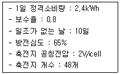
- 390
- 440
- 481
- 560
(정답률: 75%)
3. 신에너지 및 재생에너지 개발·이용·보급 촉진법령에 따라 공급인증기관이 제정하는 공급인증서 발급 및 거래시장 운영에 관한 규칙에 포함되는 사항으로 틀린 것은?
- 공급인증서의 거래방법에 관한 사항
- 공급인증서 가격의 결정방법에 관한 사항
- 신·재생에너지 공급량의 증명에 관한 사항
- 저탄소 녹색성장과 관련된 법제도에 관한 사항
(정답률: 69%)
4. 신에너지 및 재생에너지 개발·이용·보급 촉진법령에 따른 신·재생에너지정책심의회의 심의사항이 아닌 것은?
- 신·재생에너지의 기술개발 및 이용·보급에 관한 중요 사항
- 기후변화대응 기본계획, 에너지기본계획 및 지속가능발전 기본계획에 관한 사항
- 신·재생에너지 발전에 의하여 공급되는 전기의 기준가격 및 그 변경에 관한 사항
- 대통령령으로 정하는 경미한 사항을 변경하는 경우를 제외한 기본계획의 수립 및 변경에 관한 사항
(정답률: 51%)
5. 전기사업법령에 따라 전기사업자 및 한국전력거래소가 전기의 품질을 유지하기 위해 매년 1회 이상 측정하여야 하는 대상의 연결로 틀린 것은?
- 전기판매사업자 - 전압
- 한국전력거래소 - 주파수
- 배전사업자 – 전압 및 주파수
- 송전사업자 – 전압 및 주파수
(정답률: 60%)
6. 결정계 태양광발전 모듈의 면적 1.0m2, 표면온도 65℃, 변환효율 15%인 경우 일사강도 0.8kW/m2일 때 출력은 약 몇 kW인가? (단, 결정계 태양광발전 전지 온도 보정계수(α)는 –0.4%/℃이다.)
- 0.1
- 0.12
- 0.15
- 0.2
(정답률: 47%)
7. 태양복사에 대한 설명으로 틀린 것은?
- 매우 흐린 날 특히 겨울에는 태양복사는 거의 모두 산란복사 된다.
- 태양복사량의 평균값을 태양상수라고 하며 약 1367W/m2이다.
- 산란복사는 태양복사가 구름이나 대기 중의 먼지에 의해 반사되지 않고 확산된 성분이다.
- 직달복사는 태양으로부터 지표면에 직접 도달되는 복사로 물체에 강한 그림자를 만드는 성분이다.
(정답률: 69%)
8. 다음과 같은 조건에 적합한 독립형 태양광발전시스템의 설치용량은 약 몇 kWp인가? (단, STC 조건을 기준으로 한다.)
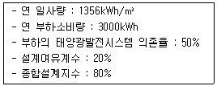
- 1.11
- 1.66
- 2.54
- 3.00
(정답률: 59%)
9. 전기사업법령에 따라 기초조사에 포함되어야 할 사항 중 경제·사회 분야의 세부항목으로 옳은 것은?
- 발전사업에 따른 지역경제 활성화 방안
- 발전설비 건설에 따른 환경오염 최소화 방안
- 발전설비에 대한 환경 규제 및 기준에 관한 사항
- 발전사업에 따른 인구 전출 유발 효과에 관한 사항
(정답률: 68%)
10. 태양광발전 어레이에 뇌 서지가 침입할 우려가 있는 장소의 대지와 회로 간에 설치하는 것은?
- SPD
- ELB
- ZCT
- MCCB
(정답률: 80%)
11. 전기공사업법령에 따라 전기공사업 등록증 및 등록수첩을 발급하는 자는?
- 시·도지사
- 전기안전공사 사장
- 지정공사업자단체장
- 산업통상자원부장관
(정답률: 68%)
12. 전기공사업법령에 따른 전기공사기술자의 시공관리 구분에서 사용전압이 22.9kV인 전기공사의 시공관리를 할 수 있는 기술자의 최소등급은?
- 초급 전기공사 기술자
- 중급 전기공사 기술자
- 고급 전기공사 기술자
- 특급 전기공사 기술자
(정답률: 68%)
13. 국토의 계획 및 이용에 관한 법령에 따른 개발행위허가를 받지 아니하여도 되는 경미한 행위 중 토석채취에 대한 내용이다. 다음 ( )에 들어갈 내용으로 옳은 것은?
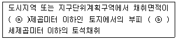
- ⓐ 20 ⓑ 20
- ⓐ 25 ⓑ 20
- ⓐ 25 ⓑ 50
- ⓐ 30 ⓑ 50
(정답률: 72%)
14. 태양광발전시스템 설치장소 선정 시 고려사항과 관계가 없는 것은?
- 도로 접근성이 용이하여야 한다.
- 일사량 및 일조시간을 고려해야 한다.
- 설치장소의 고도 및 기압을 고려해야 한다.
- 전력계통 연계조건이 어떠한지 살펴야 한다.
(정답률: 76%)
15. 동일 출력전류(I)를 가지는 N개의 태양전지를 같은 일사 조건에서 서로 병렬로 연결했을 경우 출력전류 Ia에 대한 계산식은?
- Ia = N × I
- Ia = N2 × I
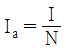
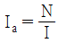
(정답률: 78%)
16. 계통연계형 태양광발전용 인버터 방식 중 중앙 집중형 인버터의 분류방식이 아닌 것은?
- 저전압 방식
- 고전압 방식
- 모듈 인버터 방식
- 마스터-슬레이브 방식
(정답률: 67%)
17. 전기사업법령에 따라 허가받은 사항 중 산업통상자원부령으로 정하는 중요 사항을 변경하려는 경우 산업통상자원부장관의 허가를 받아야 한다. 이 중요 사항에 포함되지 않는 것은?
- 사업자가 변경되는 경우
- 사업구역이 변경되는 경우
- 공급전압이 변경되는 경우
- 특정한 공급구역이 변경되는 경우
(정답률: 70%)
18. 신·재생에너지 공급의무화제도 및 연료 혼합의무화제도 관리·운영지침에 따른 용어의 정의 중 정부와 에너지공급사간에 신·재생에너지 확대 보급을 위해 체결한 협약을 말하는 용어의 약어로 옳은 것은?
- RFS
- REC
- REP
- RPA
(정답률: 62%)
19. 신에너지 및 재생에너지 개발·이용·보급 촉진법령에 따른 신·재생에너지 공급의무자의 2021년도 의무공급량의 비율(%)은?
- 5
- 6
- 7
- 9
(정답률: 70%)
20. 경제성 분석기법에서 적용하는 ‘할인율(r)’이란 무엇을 의미하는가?
- 인플레이션 비율
- 과거 이자율에 대한 현재의 이자율
- 미래의 가치를 현재의 가치와 같게 하는 비율
- 현재 시점의 금전에 대한 금전 시점의 가치 비율
(정답률: 72%)
2과목: 태양광발전 설계
21. 얕은기초의 침하량에 대한 설명으로 틀린 것은?
- 얕은기초의 침하는 즉시침하, 일차압밀침하, 이차압밀침하를 합한 것을 말한다.
- 이차압밀침하는 즉시침하 완료 후의 시간-침하관계 곡선의 기울기를 적용하여 계산한다.
- 일차압밀침하량은 지반의 압축특성, 유효응력변화, 지반의 투수성, 경계조건 등을 고려하여 계산한다.
- 기초하중에 의해 발생된 지중응력의 증가량이 초기응력에 비해 상대적으로 작지 않은 영향 깊이 내 지반을 대상으로 침하를 계산한다.
(정답률: 55%)
22. 전기실의 면적에 영향을 주는 요소로 틀린 것은?
- 변압기 용량
- 기기의 배치방법
- 건축물의 구조적 여건
- 태양광발전 모듈의 배선방법
(정답률: 69%)
23. 전기시설물 설계 시 설계도서의 실시설계 성과물로 묶이지 않은 것은?
- 내역서, 산출서, 견적서
- 설계설명서, 설계도면, 공사시방서
- 용량계산서, 간선계산서, 부하계산서
- 공사비 내역서, 용량계획서, 시스템선정 검토서
(정답률: 61%)
24. 전력시설물 공사감리업무 수행지침에 따라 부분중지를 지시할 수 있는 사유가 아닌 것은?
- 동일 공정에 있어 2회 이상 시정지시가 이행되지 않을 때
- 동일 공정에 있어 2회 이상 경고가 있었음에도 이행되지 않을 때
- 안전시공상 중대한 위험이 예상되어 물적, 인적 중대한 피해가 예견될 때
- 재시공 지시가 이행되지 않는 상태에서 다음 단계의 공정이 진행됨으로써 하자발생이 될 수 있다고 판단될 때
(정답률: 56%)
25. 한국전기설비규정에 따른 저압 옥내직류 전기설비에 대한 시설기준으로 틀린 것은?
- 옥내전로에 연계되는 축전지는 접지측도체에 과전압보호장치를 시설하여야 한다.
- 축전지실 등은 폭발성의 가스가 축적되지 않도록 환기장치 등을 시설하여야 한다.
- 저압 직류전로에 과전류차단장치를 시설하는 경우 직류단락전류를 차단하는 능력을 가지는 것이어야 하고 “직류용” 표시를 하여야 한다.
- 저압 직류전기설비를 접지하는 경우에는 직류누설전류에 의한 전기부식작용으로 인한 접지극이나 다른 금속체에 손상의 위험이 없도록 시설하여야 한다.
(정답률: 56%)
26. 태양광발전 어레이의 세로길이 L이 1.95m, 어레이 경사각 25°, 태양의 고도각 21°로 산정하여 북위 37° 지방에서 태양광발전시스템을 설치하고자 할 때 어레이 간 최소 이격거리는 약 몇 m 인가?
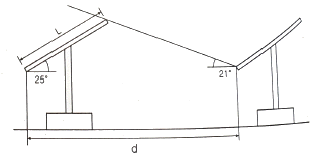
- 2.89
- 3.31
- 3.91
- 4.54
(정답률: 65%)
27. 분산형전원 배전계통연계 기술기준에 따라 Hybrid 분산형전원의 변동 빈도를 정의하기 어렵다고 판단되는 경우에는 순시전압변동률을 몇 %로 적용하여야 하는가?
- 2
- 3
- 4
- 5
(정답률: 61%)
28. 한국전기설비규정에 따라 저압 가공전선로의 지지물은 목주인 경우, 풍압하중의 몇 배의 하중에 견디는 강도를 가지는 것이어야 하는가?
- 1.2
- 1.5
- 1.6
- 2
(정답률: 45%)
29. 구조물 이격거리 산정 시 고려사항이 아닌 것은?
- 상부구조물의 하중
- 가대의 경사도와 높이
- 설치될 장소의 경사도
- 동지 시 발전 가능 한계 시간에서 태양의 고도
(정답률: 71%)
30. 전력기술관리법령에 따른 감리원의 업무범위가 아닌 것은?
- 현장 조사·분석
- 공사 단계별 기성 확인
- 입찰참가자 자격심사 기준 작성
- 현장 시공상태의 평가 및 기술지도
(정답률: 71%)
31. 어레이 설치 지역의 설계속도압이 1100N/m2, 유효수압면적이 8.0m2인 어레이의 풍하중은 약 몇 kN인가? (단, 가스트 영향계수는 1.8, 풍압계수는 1.3을 적용한다.)
- 13.500
- 17.555
- 20.592
- 25.145
(정답률: 60%)
32. 전력시설물 공사감리업무 수행지침에 따른 감리용역 계약문서가 아닌 것은?
- 설계도서
- 과업지시서
- 감리비 산출내역서
- 기술용역입찰유의서
(정답률: 45%)
33. 전력시설물 공사감리업무 수행지침에 따라 공사가 시작된 경우 공사업자가 감리원에게 제출하는 착공신고서에 포함되지 않는 것은? (단, 그 밖에 발주자의 지정한 사항이 없는 경우이다.)
- 작업인원 및 장비투입 계획서
- 관계자 회의 및 협의사항 기록대장
- 공사도급 계약서 사본 및 산출내역서
- 현장기술자 경력사항 확인서 및 자격증 사본
(정답률: 62%)
34. 한국전기설비규정에 따른 전기울타리의 시설기준에 대한 설명으로 틀린 것은?
- 전기울타리는 사람이 쉽게 출입하지 아니하는 곳에 시설할 것
- 전선과 이를 지지하는 기둥 사이의 이격거리는 25mm이상일 것
- 전선은 인장강도 1.38kN 이상의 것 또는 지름 2mm이상의 경동선일 것
- 전선과 다른 시설물(가공 전선은 제외) 또는 수목 사이의 이격거리는 50cm 이상일 것
(정답률: 61%)
35. 설계감리업무 수행지침에 따라 설계감리원은 설계업자로부터 착수신고서를 제출받아 어떤 사항에 대하여 적정성 여부를 검토하여 보고하는가?
- 설계감리일지, 예정공정표
- 설계감리일지, 근무상황부
- 예정공정표, 과업수행계획 등 그 밖에 필요한 사항
- 설계감리기록부, 과업수행계획 등 그 밖에 필요한 사항
(정답률: 60%)
36. 단상 3선식의 전압강하(e)에 대한 계산식으로 옳은 것은? (단, L:전선의 길이(m), I:전류(A), A:사용자전선의 단면적(mm2)이다.)
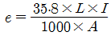
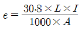
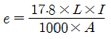
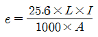
(정답률: 68%)
37. 전기설비기술기준에 따라 저압전선로 중 절연 부분의 전선과 대지 사이 및 전선의 심선 상호 간의 절연저항은 사용전압에 대한 누설전류가 최대 공급전류의 얼마를 넘지 않도록 하여야 하는가?
- 1/1000
- 1/2000
- 1/3000
- 1/4000
(정답률: 70%)
38. 해칭선에 대한 설명으로 옳은 것은?
- 가는 실선을 45° 기울여 사용
- 가는 실선을 65° 기울여 사용
- 굵은 실선을 55° 기울여 사용
- 굵은 실선을 75° 기울여 사용
(정답률: 70%)
39. 분산형전원 배전계통연계 기술기준의 용어정의 중 다음 설명에 해당하는 것은?
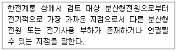
- 접속점
- 공통 연결점
- 분산형전원 연결점
- 분산형전원 검토점
(정답률: 51%)
40. 전력기술관리법령에 따라 전문 감리업 면허 보유자가 수행할 수 있는 감리업의 영업 범위는?
- 발전설비용량 10만 kW 미만의 전력시설물
- 발전설비용량 15만 kW 미만의 전력시설물
- 발전설비용량 20만 kW 미만의 전력시설물
- 발전설비용량 25만 kW 미만의 전력시설물
(정답률: 53%)
3과목: 태양광발전 시공
41. 전력계통에 순간정전이 발생하여 태양광발전용 인버터가 정지할 때 동작되는 계전기는?
- 역상계전기
- 과전류계전기
- 과전압계전기
- 저전압계전기
(정답률: 55%)
42. 한국전기설비규정에 따른 지중전선로에 사용하는 케이블의 시설 방법이 아닌 것은?
- 암거식
- 관로식
- 간접매설식
- 직접매설식
(정답률: 66%)
43. 전류의 이동으로 발생하는 현상이 아닌 것은?
- 발열작용
- 화학작용
- 탄화작용
- 자기작용
(정답률: 64%)
44. 최대수용전력 1000kVA이고 설비용량은 전등부하 500kW, 동력부하 700kVA이다. 이때 수용률은 약 몇 %인가?
- 83.3
- 86.6
- 88.3
- 90.6
(정답률: 59%)
45. 일정전압의 직류전원에 저항을 접속하고 전류를 흘릴 때 이 전류 값을 20% 증가시키기 위해서는 저항 값을 어떻게 하면 되는가? (단, 변경 전 저항 R1, 변경 후 저항 R2이다.)
- R2 ≒ 0.17 × R1
- R2 ≒ 0.23 × R1
- R2 ≒ 0.67 × R1
- R2 ≒ 0.83 × R1
(정답률: 65%)
46. 자연 상태의 토량 1000m3를 흐트러진 상태로 하면 토량은 몇 m3로 되는가? (단, 흐트러진 상태의 토량 변화율은 1.2, 다져진 상태의 토량 변화율은 0.9이다.)
- 833
- 900
- 1111
- 1200
(정답률: 63%)
47. 볼트 접합 및 핀 연결(KCS 14 31 25 : 2019)에서 정의하는 고장력 볼트의 호칭에 따른 조임길이(볼트 접합되는 판들의 두께 합)에 더하는 길이(너트 1개, 와셔 2개 두께와 나사피치 3개의 합)로 틀린 것은? (단, TS볼트의 경우는 제외한다.)
- M16 - 30mm
- M20 - 35mm
- M26 - 50mm
- M30 – 55mm
(정답률: 57%)
48. 일반적으로 고장전류 중 가장 큰 전류는?
- 1선 지락전류
- 2선 지락전류
- 선간 단락전류
- 3상 단락전류
(정답률: 65%)
49. 전력계통에 사용되는 제어반 내에 설치되는 지시계기의 오차계급에 대한 설명으로 틀린 것은?
- 위상계의 계급은 5.0급 이하로 한다.
- 역률계의 계급은 5.0급 이하로 한다.
- 주파수계의 계급은 5.0급 이하로 한다.
- 무효전력계의 계급은 5.0급 이하로 한다.
(정답률: 50%)
50. 신·재생에너지 설비의 지원 등에 관한 지침에 따라 태양광발전 접속함의 설치에 대한 설명으로 틀린 것은?
- 접속함 및 접속함 일체형 인버터는 KS 인증제품을 설치하여야 한다.
- 직사광선 노출이 적고, 소유자의 접근 및 육안확인이 용이한 장소에 설치하여야 한다.
- 접속함 일체형 인버터 중 인버터의 용량이 100kW를 초과하는 경우에는 접속함은 품질기준(KS C 8565)을 만족하여야 한다.
- 지락, 낙뢰, 단락 등으로 인해 태양광설비가 이상(異常)현상이 발생한 경우 경보등이 켜지거나 경보장치가 작동하여 즉시 외부에서 육안확인이 가능하여야 한다.
(정답률: 56%)
51. 태양광발전시스템 공사에 적용될 기본풍속에 대한 설명으로 틀린 것은?
- 10분간의 평균풍속이다.
- 재현기간 100년의 풍속이다.
- 지역별 풍속에는 서로 차이가 없다.
- 개활지의 지상 10m에서의 풍속이다.
(정답률: 66%)
52. 태양광발전시스템의 피괴설비를 회전구체법으로 할 경우 회전구체 반지름(R)은 몇 m인가? (단, 보호레벨 IV등급으로 한다.)
- 20
- 30
- 45
- 60
(정답률: 57%)
53. 송·수전단의 전압이 각각 350kV, 345kV이고 선로의 리액턴스가 60Ω일 때 송전전력(MW)은? (단, 송·수전단 전압의 위상차는 30°이다.)
- 442.75
- 885.5
- 1006.25
- 1771
(정답률: 41%)
54. 한국전기설비규정에 따라 라이팅덕트공사에 의한 저압 옥내배선의 시설기준으로 틀린 것은?
- 덕트는 조영재에 견고하게 붙일 것
- 덕트의 지지점 간의 거리는 2m 이하로 할 것
- 덕트는 조영재를 관통하여 시설하지 아니할 것
- 덕트의 개구부(開口部)는 위로 향하여 시설할 것
(정답률: 63%)
55. 특수 목적 다이오드 중 다음 내용에 해당하는 것은?
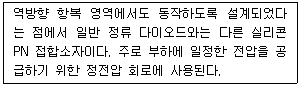
- 제너 다이오드
- 발광 다이오드
- 바이패스 다이오드
- 역류방지 다이오드
(정답률: 60%)
56. 한국전기설비규정에 따라 금속관을 콘크리트에 매입하는 것은 관의 두께가 몇 mm 이상이어야 하는가?
- 1
- 1.2
- 1.5
- 2
(정답률: 47%)
57. 그림과 같이 접지저항계를 이용하여 접지저항을 측정하고자 한다. 정확한 측정값을 얻기 위하여 E전극과 P전극 사이의 거리는 E전극과 C전극 사이의 거리에 몇 %위치에 설치하여야 하는가?
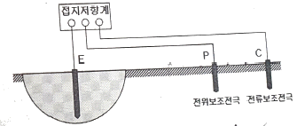
- 51.8
- 56.8
- 61.8
- 66.8
(정답률: 52%)
58. 차단기의 트립방식으로 틀린 것은?
- 저항 트립방식
- CT 트립방식
- 콘덴서 트립방식
- 부족전압 트립방식
(정답률: 48%)
59. 송전선로의 안정도 증진방법으로 틀린 것은?
- 전압변동을 작게 한다.
- 중간 조상방식을 채택한다.
- 직렬 리액턴스를 크게 한다.
- 고장 시 발전기 입·출력의 불평형을 작게 한다.
(정답률: 70%)
60. 트랜지스터의 컬렉터의 누설전류가 주위온도가 변화함에 따라 20μA에서 100μA로 증가할 때 컬렉터 전류가 0.8mA에서 1.2mA로 증가하였다면 안정계수 S는 얼마인가?
- 0.⑤
- 0.2
- 5
- 20
(정답률: 47%)
4과목: 태양광발전 운영
61. 전기사업법령에 따라 태양광발전시스템 정기점검에 대한 설명으로 틀린 것은?
- 저압이고 용량 50킬로와트 초과 100킬로와트 이하의 경우는 매월 1회 이상 점검하여야 한다.
- 저압이고 용량 200킬로와트 초과 300킬로와트 이하의 경우는 매월 2회 이상 점검하여야 한다.
- 고압이고 용량 500킬로와트 초과 600킬로와트 이하의 경우는 매월 3회 이상 점검하여야 한다.
- 고압이고 용량 600킬로와트 초과 700킬로와트 이하의 경우는 매월 3회 이상 점검하여야 한다.
(정답률: 41%)
62. 전기사업법령에 따라 발전시설용량이 3천킬로와트 이하인 발전사업의 사업개시의 신고를 하려는 자는 사업개시신고서를 누구에게 제출하여야 하는가?
- 국무총리
- 시·도지사
- 한국전력공사 사장
- 전기기술인협회 회장
(정답률: 72%)
63. 태양광발전시스템 운전 특성의 측정 방법(KS C 8535 : 20⑤)에 따른 용어 정의 중 다른 전원에서의 보충 전력량을 의미하는 것은?
- 백업 전력량
- 표준 전력량
- 역조류 전력량
- 계통 수전 전력량
(정답률: 66%)
64. 인버터의 정기점검 항목 중 육안점검 항목으로 틀린 것은?
- 통풍 확인
- 접지선의 손상
- 운전 시 이상음
- 투입저지 시한 타이머 동작시험
(정답률: 62%)
65. 절연 고무장갑의 사용범위에 대한 설명으로 틀린 것은?
- 습기가 많은 장소에서의 개폐기 개방, 투입의 경우
- 활선상태의 배전용 지지물에 누설전류의 발생 우려가 있는 경우
- 충전부에 근접하여 머리에 전기적 충격을 받을 우려가 있는 경우
- 정전 작업 시 역 송전이 우려되는 선로나 기기에 단락점지를 하는 경우
(정답률: 68%)
66. 태양광발전시스템 점검 계획 시 고려해야 할 사항이 아닌 것은?
- 환경 조건
- 고장 이력
- 부하 종류
- 설비의 중요도
(정답률: 53%)
67. 결정질 실리콘 태양광발전 모듈(성능)(KS C 8561 : 2020)에 따라 외관검사 시 몇 lx 이상의 광 조사상태에서 진행하는가?
- 1000
- 2000
- 3000
- 4000
(정답률: 66%)
68. 태양광발전시스템에서 작업 중 감전방지대책으로 틀린 것은?
- 절연 고무장갑을 착용한다.
- 절연 처리된 공구를 사용한다.
- 강우 시에는 작업을 하지 않는다.
- 작업 중 태양광발전 모듈 표면에 차광막을 벗긴다.
(정답률: 72%)
69. 중대형 태양광 발전용 인버터(계통연계형, 독립형)(KS C 8565 : 2020)에 따라 독립형의 시험 항목으로 옳은 것은?
- 출력측 단락 시험
- 자동 기동·정지 시험
- 단독 운전 방지 기능 시험
- 교류 출력 전류 변형률 시험
(정답률: 42%)
70. 산업안전보건기준에 관한 규칙에 따라 꽂옴접속기를 설치하거나 사용하는 경우 준수하여야 하는 사항으로 틀린 것은?
- 해당 꽂음 접속기에 잠금장치가 있는 경우에는 접속 후 잠그고 사용할 것
- 서로 같은 전압의 꽂음 접속기는 서로 접속되지 아니한 구조의 것을 사용할 것
- 습윤한 장소에 사용되는 꽂음 접속기는 방수형 등 그 장소에 적합한 것을 사용할 것
- 근로자가 해당 꽂음 접속기를 접속시킬 경우에는 땀 등으로 젖은 손으로 취급하지 않도록 할 것
(정답률: 56%)
71. 태양광 발전소의 높은 시스템 전압으로 인하여 태양광발전 모듈과 대지와의 전위차가 모듈의 열화를 가속시킴으로써 출력이 감소하는 현상에 대한 설명으로 틀린 것은?
- 온도와 습도가 높을수록 쉽게 발생한다.
- 직렬저항이 감소하여 누설전류가 증가한다.
- 웨이퍼의 저항, 에미터 면저항에 영향을 받는다.
- N타입, P타입 태양광발전 모듈에서 모두 발생할 수 있다.
(정답률: 60%)
72. 개방전압 측정 시 유의사항으로 틀린 것은?
- 각 스트링의 측정은 안정된 일사강도가 얻어 질 때 하도록 한다.
- 태양광발전 모듈 표면의 이물질, 먼지 등을 청소하는 것이 필요하다.
- 개방전압 측정 시 안전을 위해 우천 시 또는 흐린 날에 측정하도록 한다.
- 태양광발전 모듈의 개방전압 측정 시 접속함에서 주차단기를 반드시 차단하고 측정한다.
(정답률: 74%)
73. 태양광발전 어레이의 육안점검 시 점검내용으로 틀린 것은?
- 나사의 풀림 여부
- 가대의 부식 및 녹 발생
- 유리 등 표면의 오염 및 파손
- 절연저항 측정 및 접지, 본딩선 접속상태
(정답률: 67%)
74. 태양광발전시스템에 계측기구 및 표시장치의 설치목적으로 틀린 것은?
- 시스템의 홍보
- 시스템의 운전 상태를 감시
- 시스템의 기기 또는 시스템 종합평가
- 시스템에서 생산된 전력 판매량 파악
(정답률: 54%)
75. 인버터의 이상표시신호에 따른 조치방법에 대한 설명으로 틀린 것은?
- Line Phase Sequence Fault : 상전압 확인 후 재운전
- Line Inverter Async Fault : 계통 주파주 점검 후 운전
- Line Over Voltage Fault : 계통전압 확인 후 정상 시 5분 후 재가동
- Inverter Ground Fault : 인버터 고장부분 수리 또는 접지저항 확인 후 운전
(정답률: 49%)
76. 태양광발전 접속함(KS C 8567 : 2019)에 따라 소형 접속함의 외함 보호 등급(IP)으로 적합한 것은?
- IP 20 이상
- IP 30 이상
- IP 44 이상
- IP 54 이상
(정답률: 47%)
77. 송전설비의 유지관리를 위한 육안점검 사항 중 배전반 주회로 인입·인출부에 대한 점검개소와 점검내용에 관한 설명으로 틀린 것은?
- 부싱 : 레일 또는 스토퍼의 변형 여부 확인
- 부싱 : 코로나 방전에 의한 이상음 여부 확인
- 케이블 단말부 및 접속부, 관통부 : 쥐, 곤충 등의 침입 여부 확인
- 케이블 단말부 및 접속부, 관통부 : 케이블 막이판의 떨어짐 또는 간격의 벌어짐 유무 확인
(정답률: 52%)
78. 전기사업법령에 따라 전기사업자는 허가권자가 지정한 준비기간에 사업에 필요한 전기설비를 설치하고 사업을 시작하여야 한다. 그 준비기간은 몇 년의 범위에서 산업통상자원부장관이 정하여 고시하는 기간을 넘을 수 없는가?
- 3
- 5
- 7
- 10
(정답률: 68%)
79. 배선기구의 정비에 관한 기술지침에 따라 플러그에 대한 설명으로 틀린 것은?
- 플러그의 절연부에 균열, 파손, 탈색 등의 결함이 있는 부품은 교체하여야 한다.
- 도체 소선은 과열을 방지하기 위해 묶음 헤드나사를 사용하는 경우, 납땜을 사용하여야 한다.
- 절연체의 탈색이나 접촉면의 패임에 대해 육안 점검을 하고, 다른 부분도 탈색이나 패인 곳이 있으면 점검하여야 한다.
- 정기적으로 각 도체의 조립품을 단자까지 점검하되, 개별 도체 소선은 적절하게 수납되어야 하고, 단자 부위는 단단하게 조여야 한다.
(정답률: 66%)
80. 태양광발전시스템의 안전관리 예방업무가 아닌 것은?
- 시설물 및 작업장 위험방지
- 안전작업 관련 훈련 및 교육
- 안전관리비 실행 집행 및 관리
- 안전장구, 보호구, 소화설비의 설치, 점검, 정비
(정답률: 71%)